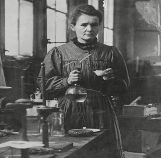

Introduction
Marie Curie,née Maria Salomea Skłodowska,(born November 7,1867,Warsaw,Congress Kingdom of Poland,Russian Empire—died July 4,1934,near Sallanches,France), Polish−born French
physicist,famous for her work on radioactivity and twice a winner of the Nobel Prize. With Henri Becquerel and her husband,Pierre Curie, she was awarded the 1903 Nobel Prize for Physics.
She was the sole winner of the 1911 Nobel Prize for Chemistry. She was the first woman to win a Nobel Prize, and she is the only woman to win the award in two different fields.
Early life:-
From childhood she was remarkable for her prodigious memory, and at the age of 16 she won a gold medal on completion of her secondary education at the Russian lycée. Because her father, a teacher of mathematics and physics, lost his savings through bad investment,she had to take work as a teacher and, at the same time, took part clandestinely in the nationalist “free university,” reading in Polish to women workers. At the age of 18 she took a post as governess, where she suffered an unhappy love affair. From her earnings she was able to finance her sister Bronisława’s medical studies in Paris, with the understanding that Bronisława would in turn later help her to get an education
Marie Curie: Facts & Related Content

Facts:-
Known As :- Maria Salomea Skłodowska
Born :- November 7, 1867 • Warsaw • Poland
Died :- July 4, 1934 (aged 66) • France
Award & Honors :- Nobel Prize (1911) • Nobel Prize (1903)
Notable Family Members :- spouse Pierre Curie • daughter Ève Curie • daughter Irène Joliot−Curie
Subjects Of Study :- pitchblende • polonium • radioactivity • radium
Move to Paris, Pierre Curie, and first Nobel Prize:-
In 1891 Skłodowska went to Paris and, now using the name Marie, began to follow the lectures of Paul Appel, Gabriel Lippmann, and Edmond Bouty at the Sorbonne. There she met physicists who were already well known—Jean Perrin, Charles Maurain, and Aimé Cotton. Skłodowska worked far into the night in her student−quarters garret and virtually lived on bread and butter and tea. She came first in the licence of physical sciences in 1893. She began to work in Lippmann’s research laboratory and in 1894 was placed second in the licence of mathematical sciences. It was in the spring of that year that she met Pierre Curie.

Their marriage (July 25, 1895) marked the start of a partnership that was soon to achieve results of world
significance, in particular the discovery of polonium (so called by Marie in honour of her native land) in the
of 1898 & that of radium a few months later.Following Henri Becquerel’s discovery (1896)of a new phenomenon
(which she later called “radioactivity”), Marie Curie, looking for a subject for a thesis, decided to find out
if the property discovered in uranium was to be found in other matter. She
discovered that this was true for thorium at the same time as G.C. Schmidt did.
Turning her attention to
minerals, she found her interest drawn to pitchblende, a mineral whose activity, superior to that of pure
uranium, could be explained only by the presence in the ore of small quantities of an unknown substance
of very high activity. Pierre Curie then joined her in the work that she had undertaken to resolve this
problem and that led to the discovery of the new elements, polonium and radium. While Pierre Curie
devoted himself chiefly to the physical study of the new radiations, Marie Curie struggled to obtain
pure radium in the metallic state—achieved with the help of the chemist André−Louis Debierne, one
of Pierre Curie’s pupils. On the results of this research, Marie Curie received her doctorate of science
in June 1903 and, with Pierre, was awarded the Davy Medal of the Royal Society. Also in 1903 they
shared with Becquerel the Nobel Prize for Physics for the discovery of radioactivity.
The birth of her
two daughters, Irène and Ève, in 1897 and 1904 did not interrupt Marie’s intensive scientific work.
She was appointed lecturer in physics at the École Normale Supérieure for girls in Sèvres (1900)
and introduced there a method of teaching based on experimental demonstrations. In December 1904
she was appointed chief assistant in the laboratory directed by Pierre Curie.
Death of Pierre and second Nobel Prize:
The sudden death of Pierre Curie (April 19, 1906) was a bitter blow to Marie Curie, but it was also a decisive turning point in her career: henceforth she was to devote all her energy to completing alone the scientific work that they had undertaken. On May 13, 1906, she was appointed to the professorship that had been left vacant on her husband’s death; she was the first woman to teach in the Sorbonne. In 1908 she became titular professor, and in 1910 her fundamental treatise on radioactivity was published. In 1911 she was awarded the Nobel Prize for Chemistry, for the isolation of pure radium. In 1914 she saw the completion of the building of the laboratories of the Radium Institute (Institut du Radium) at the University of Paris.
Throughout World War I, Marie Curie, with the help of her daughter Irène, devoted herself to the development of the use of X−radiography. In 1918 the Radium Institute, the staff of which Irène had joined, began to operate in earnest, and it was to become a universal centre for nuclear physics and chemistry. Marie Curie, now at the highest point of her fame and, from 1922, a member of the Academy of Medicine, devoted her researches to the study of the chemistry of radioactive substances and the medical applications of these substances.
Later work:
In 1921, accompanied by her two daughters, Marie Curie made a triumphant journey to the United States, where President Warren G. Harding presented her with a gram of radium bought as the result of a collection among American women. She gave lectures, especially in Belgium, Brazil, Spain, and Czechoslovakia. She was made a member of the International Commission on Intellectual Co−operation by the Council of the League of Nations. In addition, she had the satisfaction of seeing the development of the Curie Foundation in Paris and the inauguration in 1932 in Warsaw of the Radium Institute, of which her sister Bronisława became director.
One of Marie Curie’s outstanding achievements was to have understood the need to accumulate intense radioactive sources, not only to treat illness but also to maintain an abundant supply for research in nuclear physics; the resultant stockpile was an unrivaled instrument until the appearance after 1930 of particle accelerators. The existence in Paris at the Radium Institute of a stock of 1.5 grams of radium in which, over a period of several years, radium D and polonium had accumulated made a decisive contribution to the success of the experiments undertaken in the years around 1930 and in particular of those performed by Irène Curie in conjunction with Frédéric Joliot, whom she had married in 1926 (see Joliot−Curie, Frédéric and Irène). This work prepared the way for the discovery of the neutron by Sir James Chadwick and, above all, for the discovery in 1934 by Irène and Frédéric Joliot−Curie of artificial radioactivity.
A few months after this discovery, Marie Curie died as a result of leukemia caused by the action of radiation. Her contribution to physics had been immense, not only in her own work, the importance of which had been demonstrated by the award to her of two Nobel Prizes, but because of her influence on subsequent generations of nuclear physicists and chemists. Marie Curie, together with Irène Joliot−Curie, wrote the entry on radium for the 13th edition (1926) of the Encyclopedia Britannica.
In 1995 Marie Curie’s ashes were enshrined in the Panthéon in Paris; she was the first woman to receive this honour for her own achievements. Her office and laboratory in the Curie Pavilion of the Radium Institute are preserved as the Curie Museum.